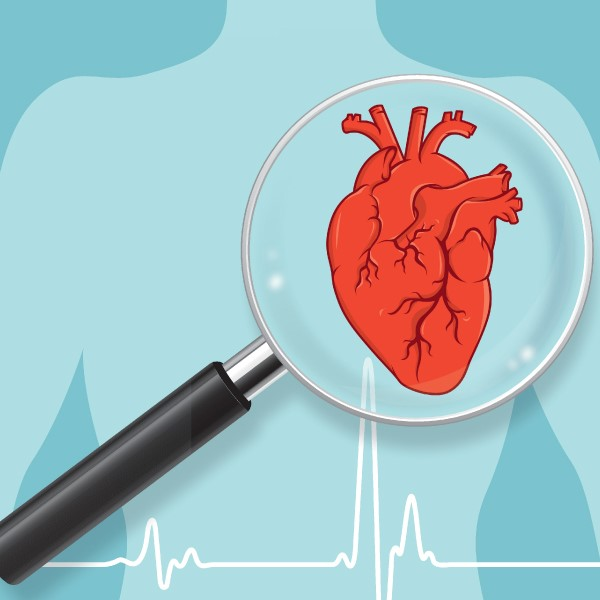

Welcome To ECG- Image Based Heartbeat Classification Application For Arrhythmia Detection

ECG Arrhythmia Classification using CNN
According to the World Health Organization (WHO), cardiovascular diseases (CVDs) are the number one cause of
death today. Over 17.7 million people died from CVDs in the year 2017 all over the world, which is about
31% of all deaths, and over 75% of these deaths occur in low and middle income countries. Arrhythmia is a
representative type of CVD that refers to any irregular change from the normal heart rhythms.
There are several types of arrhythmia including atrial fibrillation, premature contraction, ventricular
fibrillation, and tachycardia. Although single arrhythmia heartbeat may not have a serious impact on life,
continuous arrhythmia beats can result in fatal circumstances. Electrocardiogram (ECG) is a non-invasive
medical tool that displays the rhythm and status of the heart. Therefore, automatic detection of irregular
heart rhythms from ECG signals is a significant task in the field of cardiology.
A heart arrhythmia (uh-RITH-me-uh) is an irregular heartbeat. Heart rhythm problems (heart arrhythmias)
occur when the electrical signals that coordinate the heart's beats don't work properly. The faulty
signaling causes the heart to beat too fast (tachycardia), too slow (bradycardia) or irregularly.
Heart arrhythmias may feel like a fluttering or racing heart and may be harmless. However, some heart
arrhythmias may cause bothersome — sometimes even life-threatening — signs and symptoms.
Heart arrhythmia treatment may include medications, catheter procedures, implanted devices or surgery to
control or eliminate fast, slow or irregular heartbeats. A heart-healthy lifestyle can help prevent heart
damage that can trigger certain heart arrhythmias.